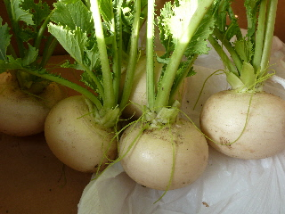
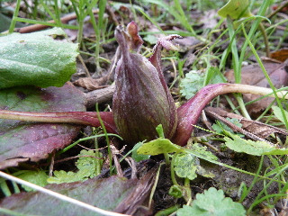

遊びで植物を育てよう
2013/01/12
寒いです。でも収穫しないとね。
先日積もった雪がまだ少し残っていました。
葉物は雪で潰されてて、今日は収獲をやめました。

ブロッコリーを収穫しました。
今シーズン初です。
少し小さいですが、収穫してもいいサイズまで育ってます。
今日は冬の定番、白菜・大根・人参・ネギも収獲しました。
【1月TOP】 【日記TOP】 【園芸TOP】
2014/01/19
株が大きくなりました。
カブが大きくなったので収穫しました。

葉っぱも美味しそう。
カブも美味しそう。
今日は雪がちらついてて寒かった。
【1月TOP】 【日記TOP】 【園芸TOP】
2014/01/25
小さなふきのとうを採りました。
まだまだ小さいですが、ふきのとうを収穫しました。

小さいだけあって苦くないです。
美味しくいただけました。
でもチョット物足りない味かな。
【1月TOP】 【日記TOP】 【園芸TOP】
過去の日記
【2013年1月の日記】
【1月TOP】
【日記TOP】
【園芸TOP】
畑仕事じゃないよ。
【おいしいものを食べよう。】【たくさん寝よう。】
【ソロ活をしよう!】【季節感のあることをしよう。】【動画視聴はほどほどに。】【当サイトの全てのコンテンツは無断転載禁止です。】